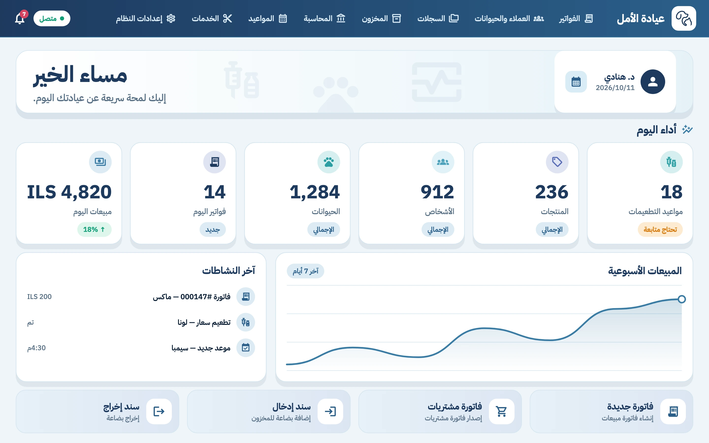
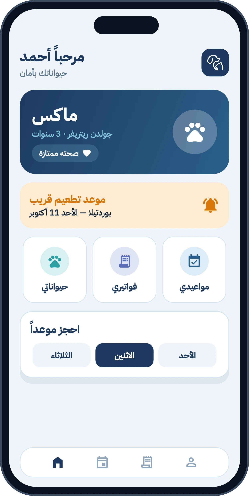
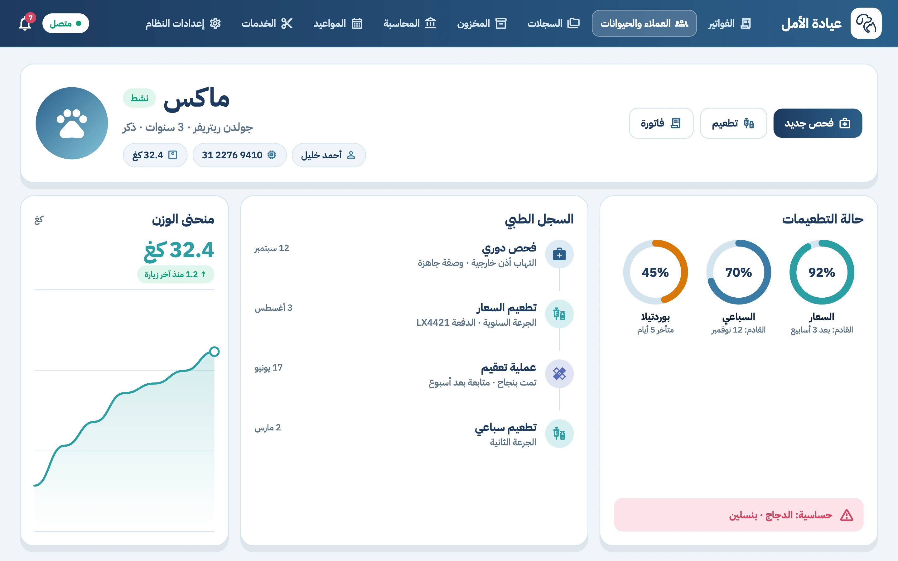
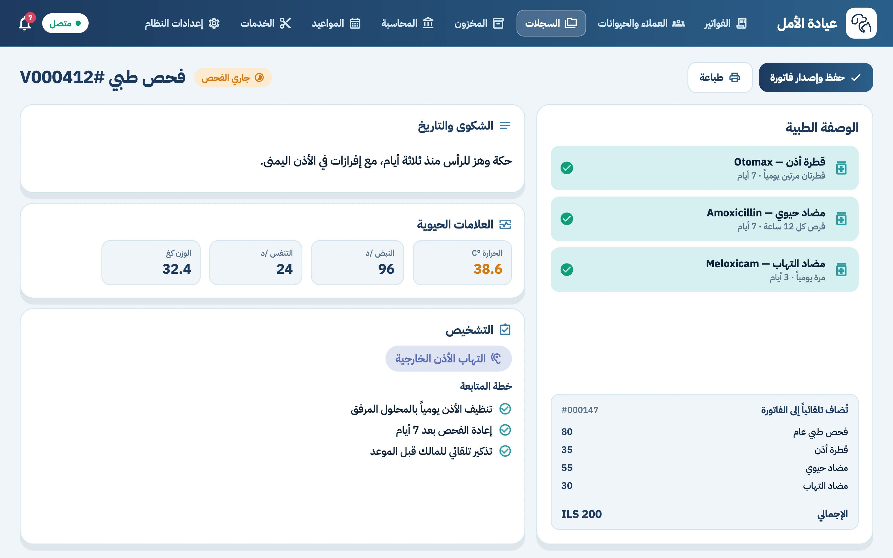
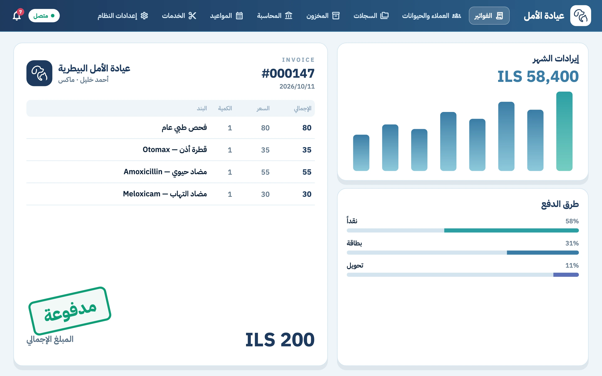
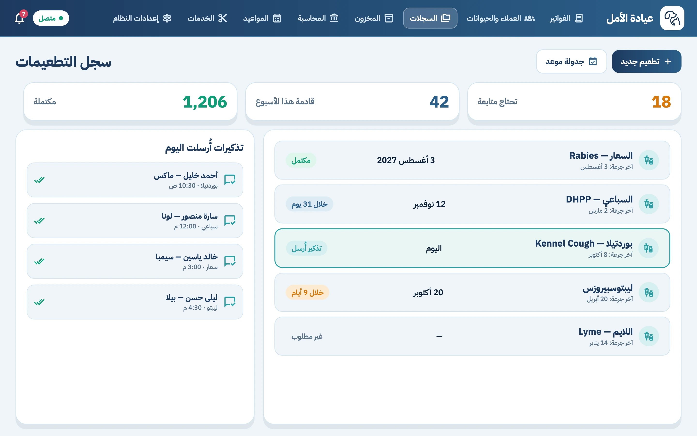
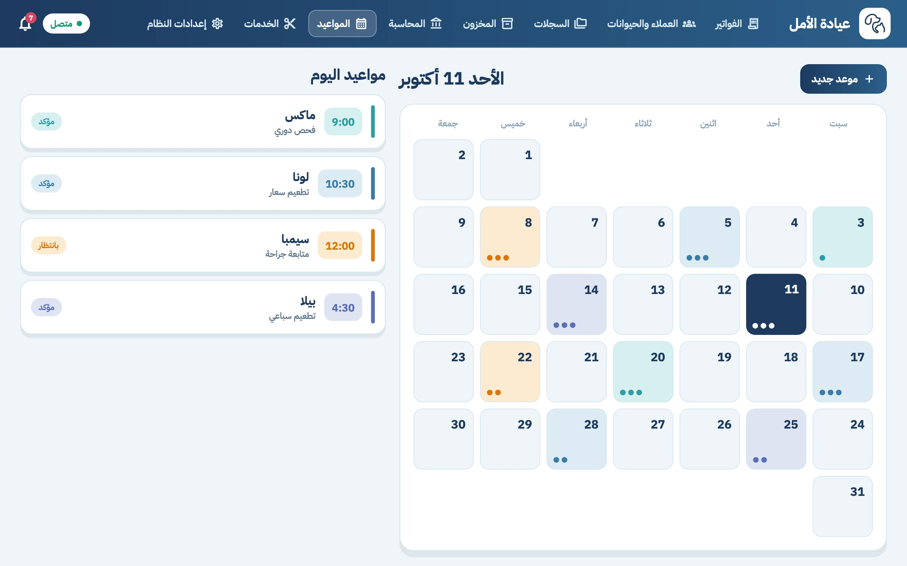
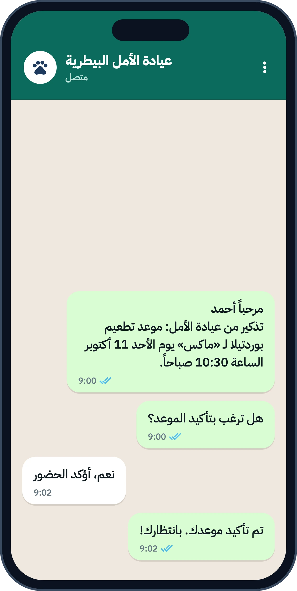
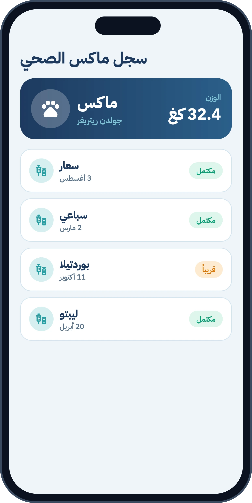

برنامج لإدارة العيادات البيطريةVeterinary clinic software
يوم عيادتك أوضح.
من أول زيارة لآخر فاتورة.A clearer clinic day.
From first visit to final invoice.
Vet Charted يجمع ملفات الحيوانات والفحوصات والتطعيمات والمواعيد والفواتير والمخزون في مكان واحد، بالعربية والإنجليزية، على الكمبيوتر والموبايل.Vet Charted keeps animal files, examinations, vaccinations, appointments, invoices and stock together, in Arabic and English, on desktop and mobile.


01يوم في العيادةA day in the clinic
ست لحظات من يوم عمل عاديSix moments from an ordinary day
اتبع ماكس، كلباً من نوع جولدن ريتريفر عمره ثلاث سنوات، من لحظة وصوله إلى آخر النهار.Follow Max, a three-year-old Golden Retriever, from the moment he walks in until the end of the day.
-
الاستقبالReception
يصل أحمد مع ماكس. تبحث باسم أحدهما فيظهر الملف: آخر زيارة، منحنى الوزن، حالة التطعيمات، وتنبيه أحمر بالحساسية من الدجاج قبل أن تبدأ.Ahmad arrives with Max. Search either name and the file opens: last visit, weight curve, vaccination status, and a red alert about his chicken allergy before you start.

-
الفحصThe examination
تسجّل الحرارة والنبض والتشخيص، وتكتب الوصفة. ما صرفته من أدوية ينتقل إلى الفاتورة، فلا تُدخل شيئاً مرتين.You record temperature, pulse and diagnosis, then write the prescription. What you dispensed moves to the invoice, so nothing is entered twice.

-
الفاتورةThe invoice
تُحسب البنود نفسها فتسجّل الفاتورة مدفوعة، ثم تطبعها أو تحفظها ملف PDF للمالك.The same items are totalled, you mark the invoice paid, then print it or save a PDF for the owner.

-
التطعيم القادمThe next vaccine
بوردتيلا بعد ثلاثة أسابيع. تُجدول الجرعة في التقويم، ويصل المالكَ تذكير واتساب قبل الموعد. إن اكتمل الموعد أو أُلغي، يتوقف التذكير وحده.Bordetella in three weeks. The dose goes into the calendar and the owner gets a WhatsApp reminder beforehand. If the visit is completed or cancelled, the reminder stops on its own.

-
المواعيدThe schedule
يُظهر التقويم المؤكَّد والمعلَّق. وطلبات الحجز التي يرسلها أصحاب الحيوانات من تطبيقهم تصل إليك لتقبلها أو تقترح وقتاً آخر.The calendar shows what is confirmed and what is pending. Booking requests owners send from their app reach you to accept or to propose another time.

-
نهاية اليومEnd of day
لوحة التحكم تلخّص مبيعات اليوم وفواتيره والتطعيمات التي تحتاج متابعة، قبل أن تغلق العيادة.The dashboard sums up today’s sales, invoices and the vaccinations that need follow-up, before you lock up.

02تطبيق المالكOwner app
المالك يتابع حيوانه من جوالهOwners follow their animal from their phone
لا يحتاج أن يتصل ليسأل عن موعد أو تطعيم. كل ما يخصّ حيوانه أمامه، والعيادة ترى ما يطلبه.No need to call and ask about an appointment or a vaccine. Everything about their animal is in front of them, and the clinic sees what they request.
- الحجزBooking
- يختار الخدمة واليوم المناسب، فيصل الطلب إلى العيادة لتؤكده أو تقترح موعداً آخر.Picks a service and a day; the request reaches the clinic to confirm or to suggest another time.
- السجلRecord
- يرى تطعيمات حيوانه ووزنه وفواتيره في أي وقت.Sees their animal’s vaccinations, weight and invoices at any time.
- الإشعاراتNotifications
- يصله تنبيه قبل كل موعد وتطعيم، ويضبط ما يريد استقباله.Gets a notice before each appointment and vaccine, and chooses what to receive.

04داخل البرنامجInside the software
ما الذي ستجده فيهWhat you will find in it
تسعة أقسام تعمل معاً على بيانات واحدة، فلا تنتقل بين أدوات منفصلة.Nine parts working on the same data, so you never hop between separate tools.
- 01
الحيوانات والعملاءAnimals and clients
ملفات الحيوانات والمالكين، الصور، الحساسية والمشاكل الصحية.Animal and owner files, photos, allergies and health problems.
- 02
الفحوصات الطبيةExaminations
الشكوى والعلامات الحيوية والتشخيص والوصفة والمرفقات.Complaint, vitals, diagnosis, prescription and attachments.
- 03
التطعيماتVaccinations
جدولة الجرعات، تذكيرات واتساب، وسجل لكل حيوان.Dose scheduling, WhatsApp reminders and a record per animal.
- 04
المواعيدAppointments
تقويم يومي وشهري، حالات مؤكدة ومعلّقة، وحجوزات من تطبيق المالك.Daily and monthly calendar, confirmed and pending states, and bookings from the owner app.
- 05
الفواتيرInvoices
مبيعات ومشتريات ومرتجعات، وطباعة PDF.Sales, purchases and returns, with PDF printing.
- 06
المخزون والمنتجاتStock and products
سندات إدخال وإخراج وحركة الأصناف.Stock-in and stock-out vouchers and item movement.
- 07
المحاسبةAccounting
سندات قبض وصرف وقيود يومية وكشوف الحسابات.Receipt and payment vouchers, journal entries and account statements.
- 08
التقاريرReports
تقارير مالية وحركة الأصناف.Financial reports and item movement.
- 09
الفريق والصلاحياتTeam and permissions
لكل موظف دور وصلاحيات، وسجل بنشاط الفريق.Each member has a role and permissions, plus a log of team activity.
05الأسئلةFAQ